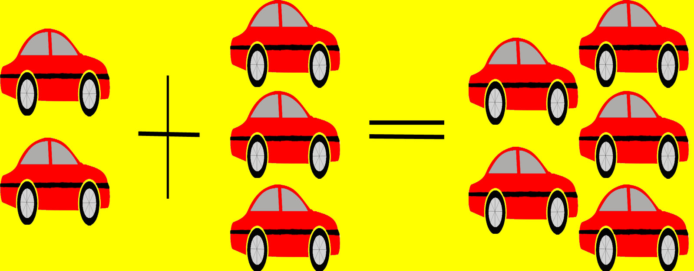

Welcome to the tutorial part of the website. On this page Tommy is going to teach you useful tips on how to learn math! The first thing to do is to make sure you can count to 10. If you can do this you can start! One way to help you + and - numbers is to use pictures. Pictures can help you as you can sit down and count how many cars there are and add on how many cars are needed. For example, if I have 2 cars and I add 3 more, you can count the cars with your fingers and find the answer 5
